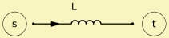

|
 |
| Purpose | Technical inductance |
| Type | Network element (2 pole) |
| Domain | Electric |
| Used in | System |
|
|
Coil 'Any name'
Node=s=t
L=
Rs=
Coil implements the model of a technical inductance in the network. L= is the inductance of the coil. You can optionally specify Rs=. Although Rs is connected in series with the coil L, you would not require any additional network nodes.
Note, since L and Rs are combined to one component, the internal voltages cannot be observed. If you need to inspect these, you would need to specify L and Rs as individual elements.
1) No losses
Coil 'L1'
Node=1=2 L=1mH
2) With dc-losses
Coil 'L1'
Node=1=2 L=1mH
Rs=1.2ohm
3) Same as example 2 but with individual elements.
Coil 'L1' Node=1=2 L=1mH Resistor 'Rs' Node=2=3 R=1.2ohm